운영업무 자동화
작업
운영자 구성
-
SQL Server 에이전트 > 운영자 > 새 운영자
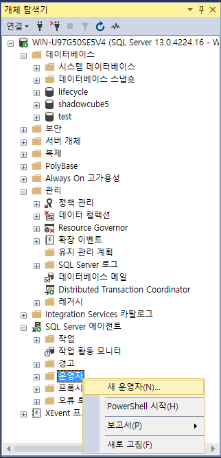
-
이름 및 메일 입력 후 확인
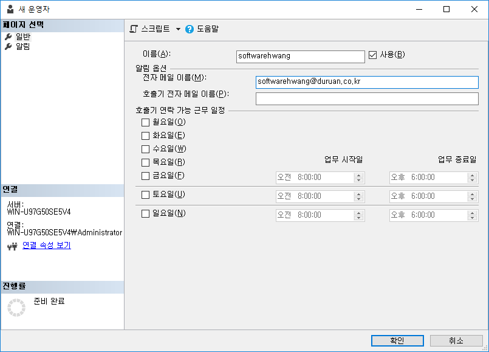
작업 설정 방법
SQL Server 에서 제공하는 작업 기능으로 test 데이터베이스를 주기적으로 백업 해보자.
-
SQL Server 에이전트 > 작업 > 새 작업
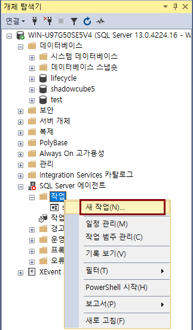
-
일반 > 이름 입력 등
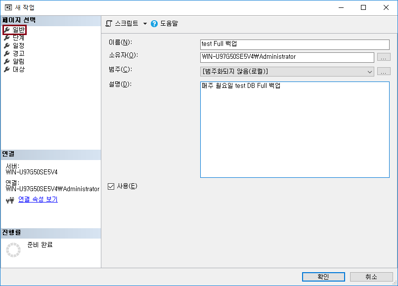
-
단계 > 새로 만들기
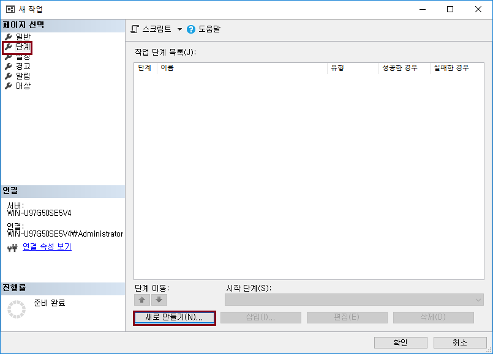
-
새 작업 단계 > 데이터베이스 선택 후, 명령 입력 > 확인
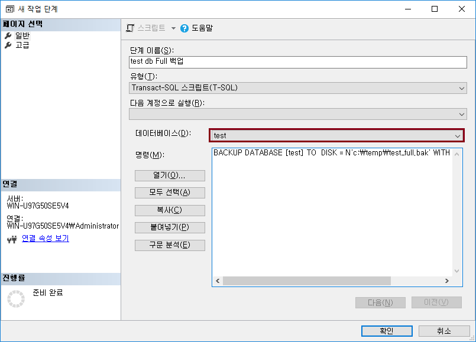
test db Full 백업 스크립트
BACKUP DATABASE [test] TO DISK = N'c:\temp\test_full.bak' WITH NOFORMAT, NOINIT
-
일정 > 새로 만들기
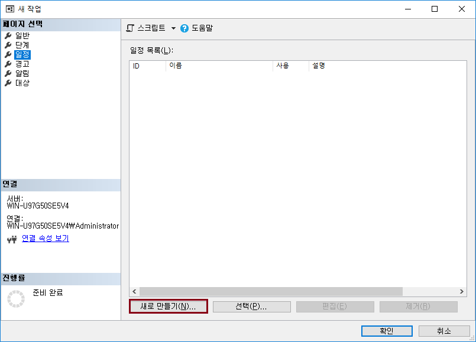
-
새 작업 일정 > 이름 등 입력
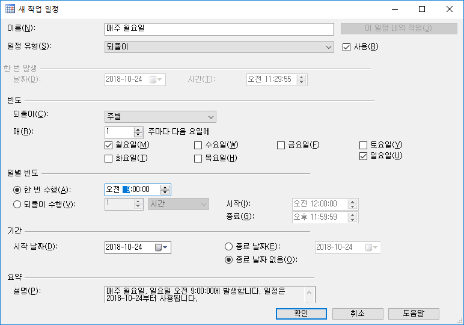
-
알림 > 전자 메일 선택 > 테스트를 위해 작업 성공 시 메일 보내도록 설정 후 확인
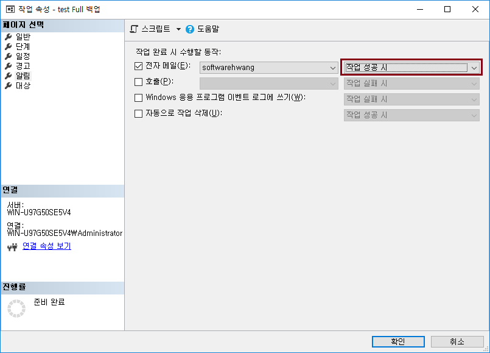
-
생성한 작업을 테스트하기 위해 SQL Server 에이전트 시작 > 해당 작업 선택 > 작업 시작 단계 클릭
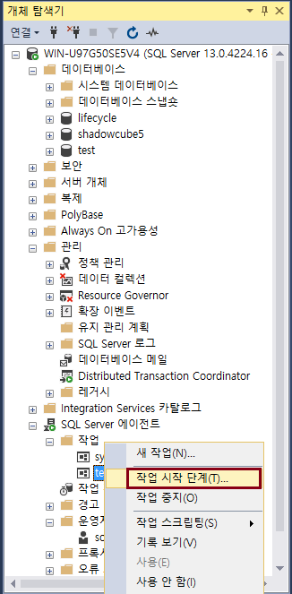
-
완료 및 메일 확인
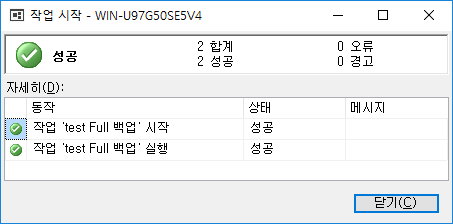
Let's Prcactice
-
작업 일정을 각자 설정해 보자.
처음으로
이전
다음